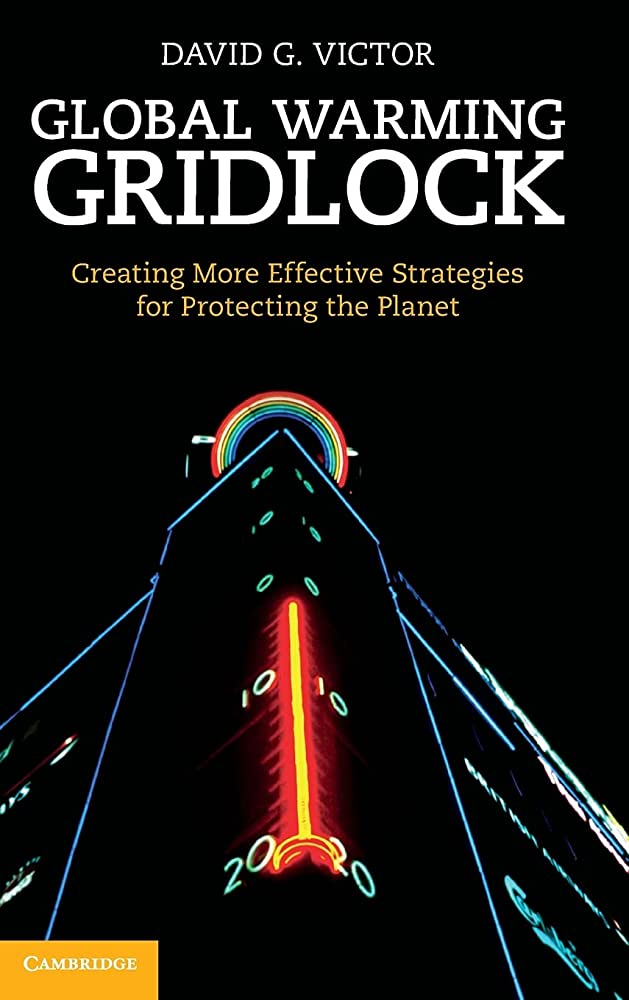
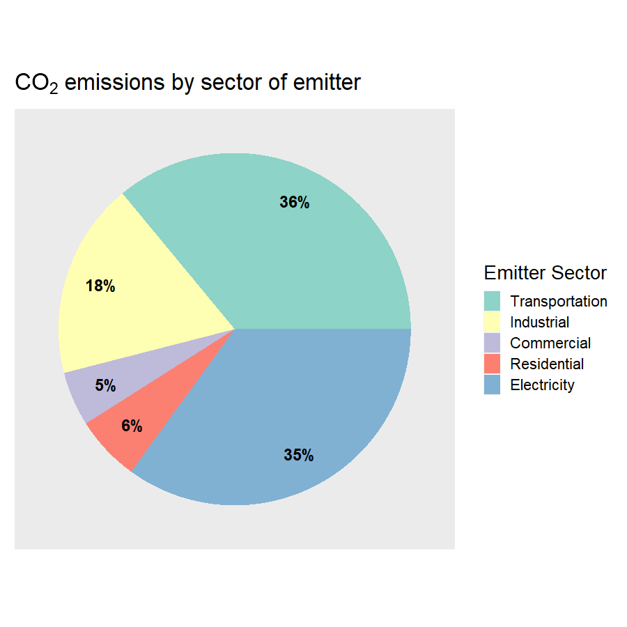
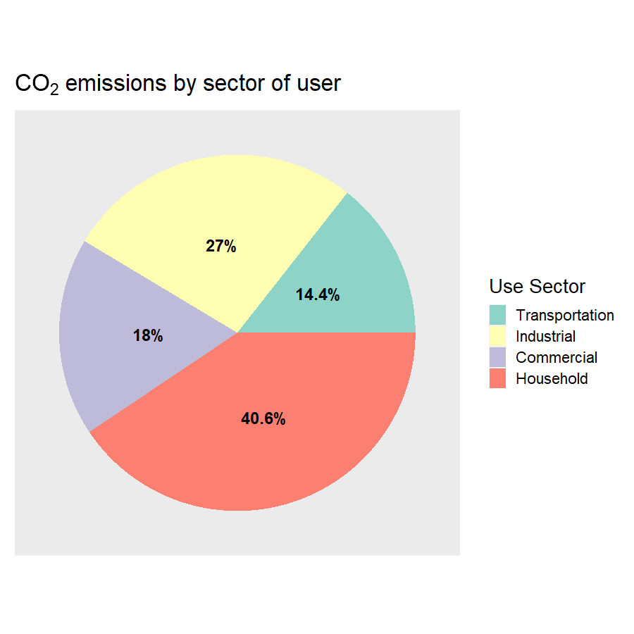
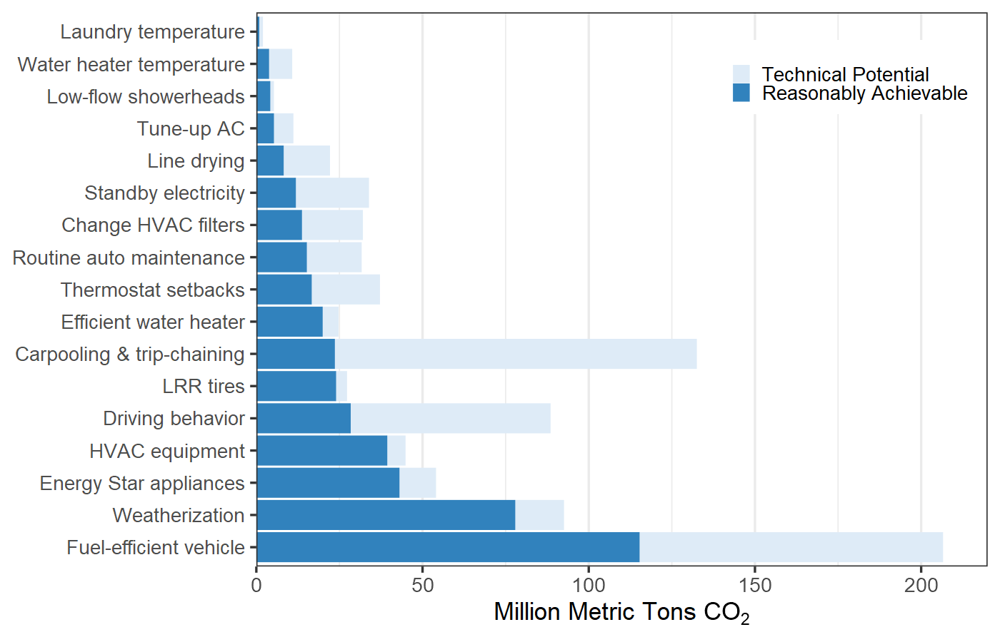
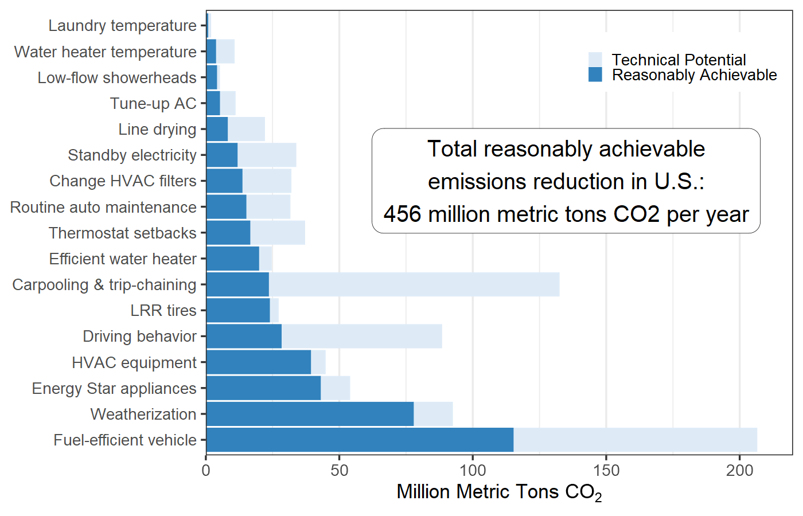
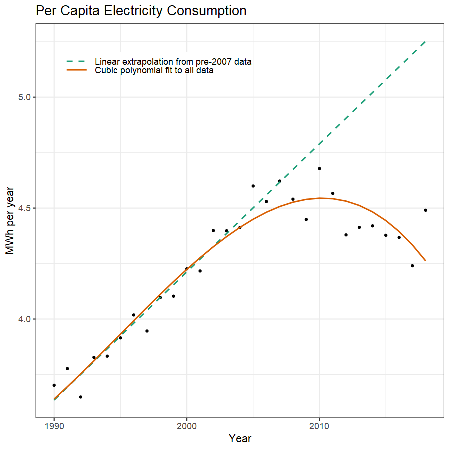
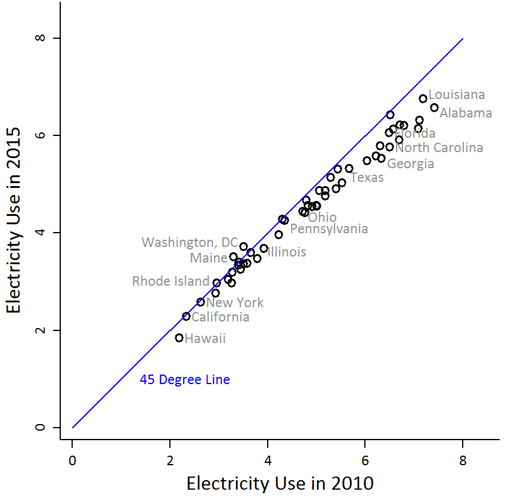
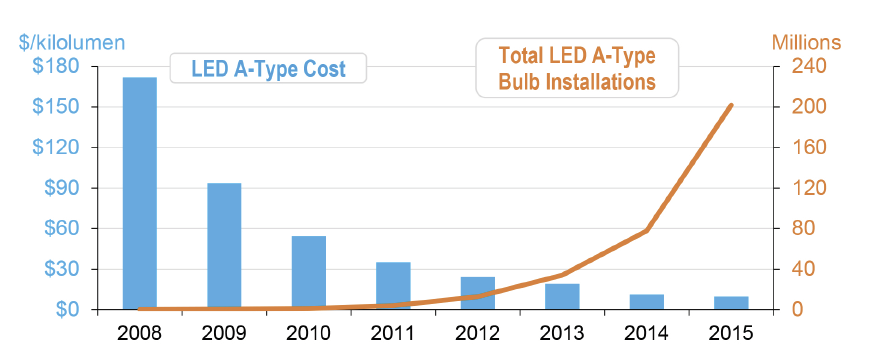
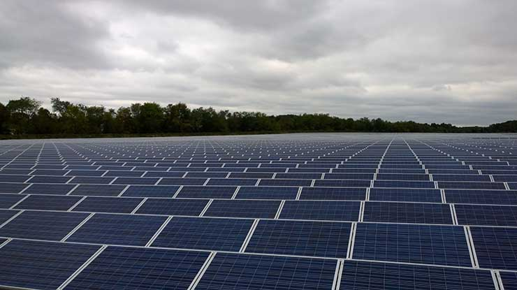
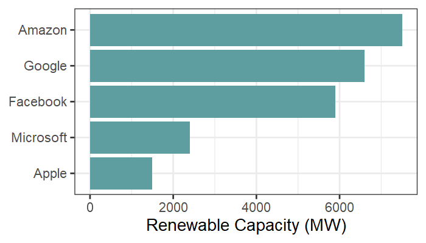

Nordhaus
Pielke

Focus on best solutions (e.g., carbon tax)
Emphasis on how well it will work when put into practice
Neglects how hard it is to get government to adopt best solutions
Second-best or third-best may be easier to enact quickly
A good plan violently executed now is better than a perfect plan executed next week
—Gen. George Patton, attrib.







Technical Potential
Reduction if everyone takes action
Behavioral Plasticity
What fraction of actors would take action with appropriate incentives?
Policy Plasticity
Potential for public or private actors to provide incentives

